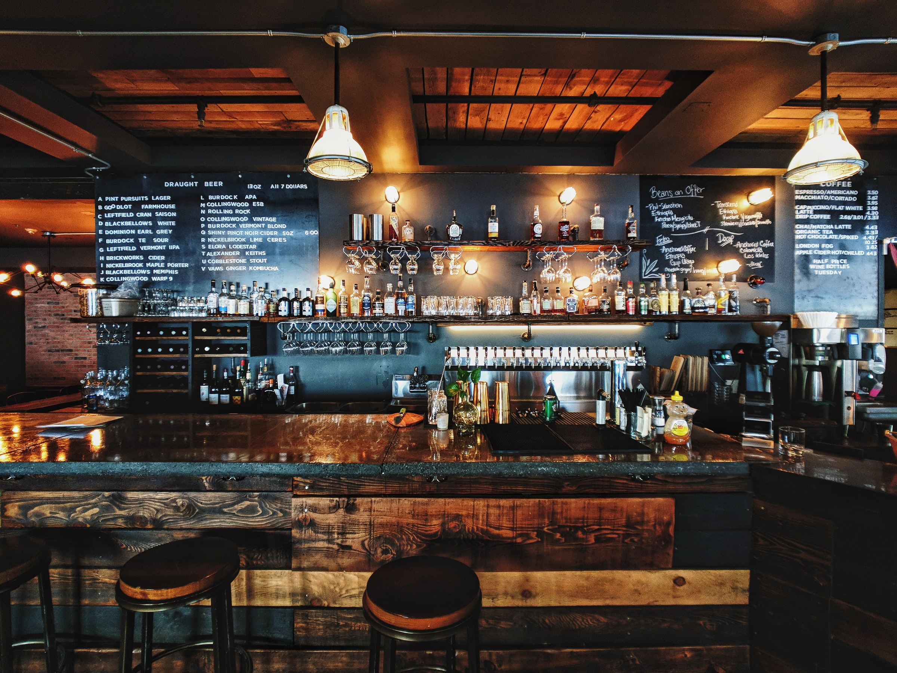

Årsmøde
Vi holder årsmøde 2021 med bl.a valg til bestyrelse. Det efterfølges af en meget spændende smagning med René fra Det Lille Bryggeri, der præsenterer 8 af sine fremragende øl!!!!
17.09.2021
Herunder finder du se en liste over klubbens kommende arrangementer.
Listen vil løbende blive opdateret.
SKÅL!
Vi holder årsmøde 2021 med bl.a valg til bestyrelse. Det efterfølges af en meget spændende smagning med René fra Det Lille Bryggeri, der præsenterer 8 af sine fremragende øl!!!!
17.09.2021
Øllet flyder som en tyk rød tråd gennem danskernes hverdag i mere end 1000 år. Vi har også siden vikingetiden været berømte/berygtede hos vores nabofolk for vores glæde ved den herlige drik. . Skands/Nationalmuseet berige os med drabelige og spændende fortællinger fra denne del af vores fælles kulturarv.
08.10.2021
Arrangementet starter kl. 18:00 med en lækker middag.
Efterfølgende vil de lokale cykel- og øltosser fortælle om årets
Tour de Biére og servere smagprøver af nogle de mange spændende øl
de smagte på touren, hvor de cyklede ca. 720 km på 8 dage og
besøgte 35 ølsteder
22.10.2021

Traditionen tro holdes igen juleølsmagning i Sindal.
Øllene serveres sammen med ølmaltet brød fra Ingeborg og mon ikke
vi får besøg af julemanden (Alan), som har noget rigtig dejligt øl
med.
17.12.2021